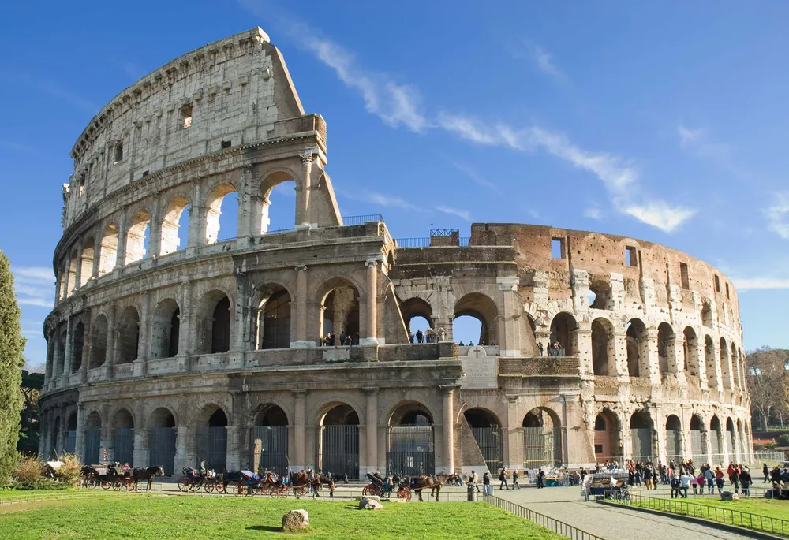

The Seven Wonders of the World are a collection of remarkable human-made structures that stand as a testament to the ingenuity, skill, and creativity of ancient civilizations. Originally listed by Greek historians, the Seven Wonders of the Ancient World include marvels like the Great Pyramid of Giza, the Hanging Gardens of Babylon, and the Statue of Zeus at Olympia. While many of these ancient wonders have been lost to time, modern initiatives have compiled new lists of wonders, including iconic structures such as the Taj Mahal, the Great Wall of China, and the Colosseum, celebrating humanity’s architectural achievements across the ages.
Great Wall of China Chichén Itzá Petra Machu Picchu Christ the Redeemer Colosseum Taj MahalGreat might be an understatement. One of the world’s largest building-construction projects, the Great Wall of China is widely thought to be about 5,500 miles (8,850 km) long; a disputed Chinese study, however, claims the length is 13,170 miles (21,200 km). Work began in the 7th century BCE and continued for two millennia. Although called a “wall,” the structure actually features two parallel walls for lengthy stretches. In addition, watchtowers and barracks dot the bulwark. One not-so-great thing about the wall, however, was its effectiveness. Although it was built to prevent invasions and raids, the wall largely failed to provide actual security. Instead, scholars have noted that it served more as “political propaganda. The Great Wall of China is one of the most iconic structures in the world, symbolizing China's rich history and architectural prowess. Built over several dynasties, starting as early as the 7th century BC and continuing until the 17th century, the wall stretches over 13,000 miles across northern China. Initially, it was constructed to protect Chinese states from invasions by nomadic groups from the north, such as the Mongols. Its structure is composed of various materials, including stone, brick, tamped earth, and wood, depending on the region and resources available. The wall is not a continuous line but rather a series of walls and fortifications that snake through deserts, mountains, and plateaus. Some parts of the wall have deteriorated over time, but significant sections, particularly those near Beijing, have been restored. The Ming dynasty was responsible for building much of what we see today, with an emphasis on making it stronger and more imposing. Watchtowers were added to provide lookout points, and soldiers stationed along the wall could quickly relay signals to warn of approaching threats. Beyond its military function, the Great Wall holds cultural and symbolic significance. It represents China's resilience, unity, and determination to protect its civilization from outside forces. Today, it is a UNESCO World Heritage site and a major tourist attraction, drawing millions of visitors each year. Despite natural erosion and human damage, the Great Wall remains a testament to ancient engineering and a powerful reminder of China's historical endurance. In addition to its military and strategic significance, the Great Wall of China has become a symbol of cultural identity and pride for the Chinese people. Over the centuries, it has been the subject of legends, stories, and poetry, often symbolizing the boundary between the civilized world and the unknown. The wall's construction required immense manpower, with historians estimating that hundreds of thousands, if not millions, of laborers, soldiers, and prisoners worked on its various sections. Many people lost their lives during its construction, leading to its nickname "the longest cemetery on Earth." The sacrifices made during its creation further enhance its historical and emotional significance. Modern conservation efforts have helped preserve the wall, though it faces challenges from natural erosion, tourism, and vandalism. Local communities and the Chinese government have taken steps to protect it, implementing policies to control tourism and encourage responsible preservation. Some sections have been repurposed for contemporary use, such as hosting marathons and other cultural events, showing how the wall continues to evolve in its role within Chinese society. Its importance has transcended its original purpose, serving as both a reminder of China's ancient history and a symbol of its resilience in the modern world.”
Chichén Itzá is a Mayan city on the Yucatán Peninsula in Mexico, which flourished in the 9th and 10th centuries CE. Under the Mayan tribe Itzá—who were strongly influenced by the Toltecs—a number of important monuments and temples were built. Among the most notable is the stepped pyramid El Castillo (“The Castle”), which rises 79 feet (24 meters) above the Main Plaza. A testament to the Mayans’ astronomical abilities, the structure features a total of 365 steps, the number of days in the solar year. During the spring and autumnal equinoxes, the setting sun casts shadows on the pyramid that give the appearance of a serpent slithering down the north stairway; at the base is a stone snake head. Life there was not all work and science, however. Chichén Itzá is home to the largest tlachtli (a type of sporting field) in the Americas. On that field the residents played a ritual ball game popular throughout pre-Columbian Mesoamerica. Chichén Itzá is one of the most significant archaeological sites of the ancient Maya civilization, located in the Yucatán Peninsula of Mexico. As a major urban center, it flourished between the 9th and 12th centuries AD and became a focal point for trade, politics, and religious ceremonies. The site covers approximately five square kilometers and features various temples, pyramids, and plazas that reflect the architectural and cultural achievements of the Maya people. Among the most famous structures is the Pyramid of Kukulkán, also known as El Castillo, which dominates the site and exemplifies the precision and sophistication of Maya architecture. El Castillo is not only a testament to the Maya's architectural prowess but also their astronomical knowledge. The pyramid was built to align with the equinoxes, and during these events, the play of light and shadow creates the illusion of a serpent slithering down the staircase. This serpent represents Kukulkán, the feathered serpent god of the Maya. The structure has 91 steps on each of its four sides, and when combined with the platform at the top, totals 365 steps, symbolizing the days of the solar year. This reflects the Maya’s deep understanding of time, mathematics, and astronomy. Another important structure at Chichén Itzá is the Great Ball Court, the largest of its kind in Mesoamerica. This court was used for the ancient Mesoamerican ballgame, a ritualistic and symbolic game often associated with religious and political significance. The court features elaborate carvings that depict the ballgame, including scenes of players, captives, and ritual decapitation, which was believed to be an offering to the gods. The acoustics of the ball court are another fascinating feature; a whisper from one end can be heard clearly at the other, which may have been used to amplify speeches or ceremonial announcements. The Temple of the Warriors and the nearby Group of a Thousand Columns further demonstrate the grandeur of Chichén Itzá. The Temple of the Warriors is adorned with carvings of warriors and figures from Maya mythology, while the columns suggest that large gatherings or markets were held in these open spaces. The site's layout and architecture reflect a blend of Maya and Toltec influences, indicating that Chichén Itzá was a melting pot of cultures during its peak. This integration of artistic and architectural styles points to the city's importance as a regional power and a hub for cultural exchange. Today, Chichén Itzá is recognized as a UNESCO World Heritage site and one of the New Seven Wonders of the World. It attracts millions of visitors annually, who come to marvel at the grandeur and mystery of this ancient city. While much of the site has been preserved, ongoing archaeological work continues to reveal more about the Maya civilization, their rituals, and their way of life. Chichén Itzá remains a symbol of the Maya's enduring legacy and their remarkable contributions to science, architecture, and culture.


The ancient city of Petra, Jordan, is located in a remote valley, nestled among sandstone mountains and cliffs. It was purported to be one of the places where Moses struck a rock and water gushed forth. Later the Nabataeans, an Arab tribe, made it their capital, and during this time it flourished, becoming an important trade center, especially for spices. Noted carvers, the Nabataeans chiseled dwellings, temples, and tombs into the sandstone, which changed color with the shifting sun. In addition, they constructed a water system that allowed for lush gardens and farming. At its height, Petra reportedly had a population of 30,000. The city began to decline, however, as trade routes shifted. A major earthquake in 363 CE caused more difficulty, and after another tremor hit in 551, Petra was gradually abandoned. Although rediscovered in 1912, it was largely ignored by archaeologists until the late 20th century, and many questions remain about the city. Petra, an ancient city carved into the rose-red cliffs of southern Jordan, is one of the most extraordinary archaeological sites in the world. Known as the "Lost City," Petra was the capital of the Nabataean Kingdom and thrived as a trading hub between 400 BC and AD 106. Hidden within a rugged valley, Petra remained unknown to the Western world until Swiss explorer Johann Ludwig Burckhardt rediscovered it in 1812. The city’s unique architecture, with its monumental rock-cut facades, tombs, and temples, was sculpted directly into the cliffs, giving Petra its striking and timeless appearance. One of the most iconic structures in Petra is Al-Khazneh, or "The Treasury," an intricately carved building that stands 40 meters tall. Originally a royal tomb, the façade of Al-Khazneh is a masterpiece of Hellenistic design, with Greco-Roman influences evident in its columns, pediments, and sculptures. Its grand size and craftsmanship showcase the Nabataeans’ exceptional skill in engineering and architecture. The Treasury is the first sight that greets visitors after walking through the Siq, a narrow gorge that serves as the dramatic entrance to Petra. The Siq itself, with its towering walls, adds to the mystique and grandeur of the site. Beyond the Treasury, Petra unfolds as a sprawling city filled with rock-cut structures, temples, and even a Roman-style theater that could hold up to 8,000 spectators. The Nabataeans, who were masterful water engineers, built an extensive system of dams, cisterns, and aqueducts to supply the city with fresh water, allowing it to thrive in the arid desert environment. This ingenious water management system supported not only the city's population but also its lush gardens and agriculture, further enhancing Petra’s role as a flourishing center of trade and culture in the ancient world. The Monastery (Ad Deir) is another monumental structure within Petra, similar in design to the Treasury but even larger. Its vast façade, standing 50 meters wide and 45 meters tall, was likely used as a temple or a place of religious gatherings. To reach the Monastery, visitors must ascend over 800 steps carved into the rock, leading them through breathtaking landscapes. The journey up to the Monastery, and the site itself, offers a profound sense of Petra’s scale and the effort it took to construct such an awe-inspiring city. Today, Petra is a UNESCO World Heritage site and one of the New Seven Wonders of the World, attracting visitors from around the globe. Archaeologists continue to excavate and study Petra, uncovering more about the Nabataeans’ advanced civilization and their influence on trade routes across the ancient Near East. As a symbol of ancient ingenuity and cultural achievement, Petra remains a powerful testament to the resilience and creativity of the people who built it over two millennia ago.
This Incan site near Cuzco, Peru, was “discovered” in 1911 by Hiram Bingham, who believed it was Vilcabamba, a secret Incan stronghold used during the 16th-century rebellion against Spanish rule. Although that claim was later disproved, the purpose of Machu Picchu has confounded scholars. Bingham believed it was home to the “Virgins of the Sun,” women who lived in convents under a vow of chastity. Others think that it was likely a pilgrimage site, while some believe it was a royal retreat. (One thing it apparently should not be is the site of a beer commercial. In 2000 a crane being used for such an ad fell and cracked a monument.) What is known is that Machu Picchu is one of the few major pre-Columbian ruins found nearly intact. Despite its relative isolation high in the Andes Mountains, it features agricultural terraces, plazas, residential areas, and temples. Machu Picchu, often referred to as the "Lost City of the Incas," is a breathtaking archaeological site located high in the Andes Mountains of Peru. Built in the 15th century during the reign of the Inca emperor Pachacuti, Machu Picchu is a stunning example of Inca engineering, architecture, and culture. Perched on a mountain ridge at about 2,430 meters (7,970 feet) above sea level, it was likely used as a royal estate or a religious retreat. The site was abandoned in the 16th century, during the Spanish conquest, but it remained largely hidden from the outside world until its rediscovery by American explorer Hiram Bingham in 1911. The architectural genius of the Inca is evident in Machu Picchu’s layout, which seamlessly blends with the surrounding landscape. The city is divided into two main areas: the agricultural sector and the urban sector. The agricultural terraces, carved into the steep mountainside, were used for growing crops and preventing soil erosion, showcasing the Inca’s advanced agricultural techniques. In the urban sector, buildings like the Temple of the Sun and the Intihuatana stone reflect the spiritual significance of Machu Picchu. The Intihuatana, a carved stone believed to function as an astronomical calendar, highlights the Incas' deep connection to their environment and their sophisticated understanding of celestial movements. One of the most remarkable features of Machu Picchu is its construction without the use of mortar. The Inca employed a technique known as "ashlar," where stones were precisely cut and fitted together so tightly that not even a blade of grass could fit between them. This method made the structures highly resilient to earthquakes, a crucial feature in a region prone to seismic activity. The engineering marvel of Machu Picchu is further demonstrated by its advanced drainage systems and water channels, which helped manage the heavy rainfall in the region and provided fresh water to its inhabitants. Machu Picchu’s location, shrouded by dense forests and mist, added to its mystical aura and may have contributed to its preservation, as it was never discovered by the Spanish conquistadors. The surrounding landscape, with its dramatic cliffs and lush vegetation, enhances the sense of isolation and tranquility that visitors often describe. Today, the site is not only a major tourist destination but also a UNESCO World Heritage site, recognized for both its cultural and natural significance. The preservation of Machu Picchu is of paramount importance, as the growing number of visitors poses challenges to the conservation of its fragile structures. As a symbol of Inca ingenuity and spiritual depth, Machu Picchu continues to inspire awe and curiosity. Ongoing archaeological research sheds light on the daily life, rituals, and innovations of the Inca civilization, while its panoramic views of the Andes and the Urubamba River valley draw travelers from around the world. Machu Picchu stands as a testament to the Inca Empire’s extraordinary achievements and its ability to harmonize human development with the natural environment.


Christ the Redeemer, a colossal statue of Jesus, stands atop Mount Corcovado in Rio de Janeiro. Its origins date to just after World War I, when some Brazilians feared a “tide of godlessness.” They proposed a statue, which was ultimately designed by Heitor da Silva Costa, Carlos Oswald, and Paul Landowski. Construction began in 1926 and was completed five years later. The resulting monument stands 98 feet (30 meters) tall—not including its base, which is about 26 feet (8 meters) high—and its outstretched arms span 92 feet (28 meters). It is the largest Art Deco sculpture in the world. Christ the Redeemer is made of reinforced concrete and is covered in approximately six million tiles. Somewhat disconcertingly, the statue has often been struck by lightning, and in 2014 the tip of Jesus’s right thumb was damaged during a storm. Christ the Redeemer, one of the most iconic landmarks in the world, stands tall atop the Corcovado Mountain in Rio de Janeiro, Brazil. This monumental statue of Jesus Christ, with outstretched arms, symbolizes peace and embrace, overlooking the vibrant city below. Measuring 98 feet tall (30 meters) and standing on a 26-foot (8-meter) pedestal, the statue has become an enduring symbol of Christianity and a global icon of Brazil. It was completed in 1931 after nine years of construction and remains one of the most visited tourist attractions in the world. The figure’s open arms reflect the welcoming nature of the Brazilian people and the belief in universal compassion and forgiveness. The idea for the statue dates back to the 1850s, but it wasn’t until the 1920s that the Catholic Church in Brazil and local citizens pushed for the construction of a religious monument. The statue was designed by Brazilian engineer Heitor da Silva Costa, while the French sculptor Paul Landowski created its face and detailed features. The structure is made of reinforced concrete and covered with thousands of triangular soapstone tiles, chosen for their durability and resistance to harsh weather conditions. The project was a collaborative effort, involving engineers, sculptors, and craftsmen, and it stands as a testament to both Brazilian and international expertise. Christ the Redeemer’s location on Corcovado Mountain provides stunning panoramic views of Rio de Janeiro, including landmarks such as Sugarloaf Mountain, Copacabana Beach, and the Maracanã Stadium. The site itself is part of the Tijuca National Park, a lush rainforest that enhances the dramatic backdrop of the statue. Visitors can reach the summit via a steep train ride or by climbing hundreds of steps, making the journey to the statue almost a pilgrimage. Once at the top, the sense of scale and serenity that the statue imparts, combined with the breathtaking views of the city and coastline, creates a deeply spiritual and awe-inspiring experience for many. Throughout its history, Christ the Redeemer has become much more than just a religious symbol. It has played an important role in Brazilian culture and national identity, often serving as a focal point during major events such as World Youth Day, the FIFA World Cup, and the Olympic Games. The statue is also a symbol of hope and resilience; it was illuminated with the flags of nations during the COVID-19 pandemic, symbolizing solidarity and global unity in difficult times. Regular maintenance and restoration work, including a major renovation for its 75th anniversary in 2006, have ensured that the statue remains in excellent condition for future generations. As a UNESCO World Heritage site and one of the New Seven Wonders of the World, Christ the Redeemer continues to draw millions of visitors each year. Its powerful message of peace, love, and acceptance transcends religious boundaries, making it a universal symbol of faith and humanity. The statue’s commanding presence, combined with its cultural and spiritual significance, has made Christ the Redeemer a timeless emblem of Rio de Janeiro and an enduring beacon of hope in a complex world.
The Colosseum in Rome was built in the first century by order of the Emperor Vespasian. A feat of engineering, the amphitheater measures 620 by 513 feet (189 by 156 meters) and features a complex system of vaults. It was capable of holding 50,000 spectators, who watched a variety of events. Perhaps most notable were gladiator fights, though men battling animals was also common. In addition, water was sometimes pumped into the Colosseum for mock naval engagements. However, the belief that Christians were martyred there—namely, by being thrown to lions—is debated. According to some estimates, about 500,000 people died in the Colosseum. Additionally, so many animals were captured and then killed there that certain species reportedly became extinct. The Colosseum, also known as the Flavian Amphitheater, is one of the most remarkable and enduring symbols of ancient Rome. Located in the heart of the city, this massive structure was completed in AD 80 under Emperor Titus, though its construction began during the reign of his father, Emperor Vespasian. Capable of holding up to 50,000 spectators, the Colosseum was primarily used for gladiatorial contests, public spectacles, animal hunts, and mock naval battles. Its elliptical shape and innovative design, which includes a complex system of vaults and arches, made it an engineering marvel of its time and a template for modern stadiums. The Colosseum’s architecture reflects the ingenuity of Roman engineering. Its four-story exterior is constructed from travertine stone, and the façade is adorned with columns in the Doric, Ionic, and Corinthian styles. The interior was just as impressive, featuring a retractable awning system known as the *velarium*, which provided shade for the audience. Beneath the arena floor lay a vast network of underground tunnels and chambers called the *hypogeum*, where gladiators and animals were kept before entering the arena. These chambers were connected by elevators and trapdoors, allowing dramatic entrances and exits during the events. Events held in the Colosseum were often grand spectacles, designed to entertain the Roman public and showcase the power of the empire. Gladiatorial combats were the most popular attraction, where trained fighters, often slaves or prisoners of war, battled each other or wild animals. Emperors used these games as a way to gain favor with the populace, and they could last for days during major festivals. The Colosseum also hosted *venationes*, or staged animal hunts, where exotic animals like lions, tigers, and elephants were pitted against each other or human hunters in staged battles. These events were meant to demonstrate Rome’s dominance over nature and its enemies. Despite its original purpose as a venue for violent entertainment, the Colosseum has come to symbolize both the grandeur and complexity of ancient Roman society. In later centuries, after the fall of the Roman Empire, the Colosseum fell into disrepair and was repurposed as a fortress, a quarry, and a Christian shrine. However, much of the structure still stands today, even after centuries of earthquakes, stone looting, and natural wear. Preservation efforts over the past centuries have helped protect the Colosseum, and it continues to be one of the most visited monuments in the world, drawing millions of tourists annually. Today, the Colosseum is a UNESCO World Heritage site and a powerful reminder of Rome’s ancient legacy. While its bloody past is acknowledged, it is also viewed as a testament to Roman architectural prowess and the empire’s influence on the world. The Colosseum stands as a symbol of the strength, ambition, and creativity of one of the greatest civilizations in history, while also reminding us of the complexity of human culture and the evolution of entertainment over the millennia.

This mausoleum complex in Agra, India, is regarded as one of the world’s most iconic monuments and is perhaps the finest example of Mughal architecture. It was built by Emperor Shah Jahān (reigned 1628–58) to honor his wife Mumtāz Maḥal (“Chosen One of the Palace”), who died in 1631 giving birth to their 14th child. It took about 22 years and 20,000 workers to construct the complex, which includes an immense garden with a reflecting pool. The mausoleum is made of white marble that features semiprecious stones in geometric and floral patterns. Its majestic central dome is surrounded by four smaller domes. According to some reports, Shah Jahān wished to have his own mausoleum made out of black marble. However, he was deposed by one of his sons before any work began. The Taj Mahal, one of the most iconic monuments in the world, is a symbol of eternal love and a masterpiece of Mughal architecture. Located in Agra, India, it was commissioned by Emperor Shah Jahan in 1632 in memory of his beloved wife, Mumtaz Mahal, who died during childbirth. The mausoleum, completed in 1648, stands as a testament to their love and the emperor's grief. Built primarily of white marble, the Taj Mahal combines elements of Islamic, Persian, Ottoman Turkish, and Indian architectural styles. Its symmetrical design, intricate carvings, and stunning inlay work make it one of the finest examples of Mughal art. The central structure of the Taj Mahal is a massive marble dome that rises 73 meters (240 feet) above a square base. The dome is flanked by four smaller domes and surrounded by four slender minarets, which are slightly tilted outward to prevent collapse in case of an earthquake. Inside the main chamber lies the cenotaph of Mumtaz Mahal, with Shah Jahan’s cenotaph placed beside hers after his death. However, their actual graves are in a lower chamber beneath the main structure. The entire mausoleum is adorned with delicate marble carvings and semi-precious stones inlaid to form intricate floral patterns and calligraphy, particularly Quranic verses. The Taj Mahal’s setting enhances its beauty, with the structure reflected in a long pool leading to the entrance, part of a larger, meticulously designed garden known as the *charbagh*. This Persian-style garden symbolizes paradise and is divided into four quadrants by water channels. The layout creates a sense of tranquility and symmetry, which is a hallmark of Mughal architecture. The use of white marble gives the Taj Mahal its distinctive luminosity, which changes color throughout the day, from a soft pinkish hue at dawn to a brilliant white in the midday sun and a golden glow by moonlight, adding to its ethereal quality. In addition to being a monument of love, the Taj Mahal reflects the grandeur and wealth of the Mughal Empire. It was constructed by a workforce of over 20,000 artisans and craftsmen, including architects, stonecutters, inlayers, and calligraphers from across the empire and beyond. Materials such as marble, jasper, turquoise, and jade were sourced from all over India and as far away as China, Sri Lanka, and Afghanistan. The precision of the craftsmanship and the scale of the project illustrate the empire’s artistic and cultural sophistication during its golden age. Today, the Taj Mahal is recognized as a UNESCO World Heritage site and one of the New Seven Wonders of the World, attracting millions of visitors from around the globe. While its beauty and architectural significance continue to captivate people, it is also a symbol of India's rich history and cultural diversity. Efforts have been made to preserve the monument from environmental damage and pollution, ensuring that the Taj Mahal remains a beacon of love, artistry, and history for future generations. Its timeless beauty, combined with the poignant story behind its creation, ensures that the Taj Mahal will always stand as one of the world’s most cherished monuments.